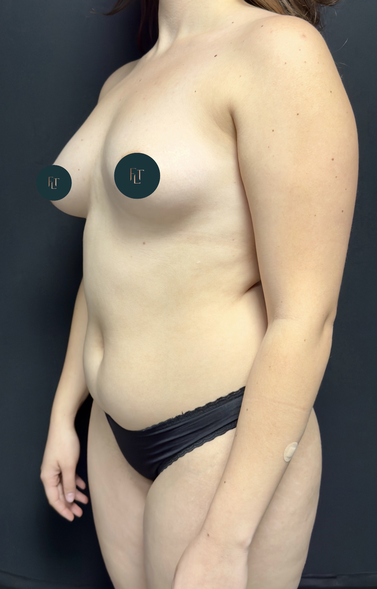
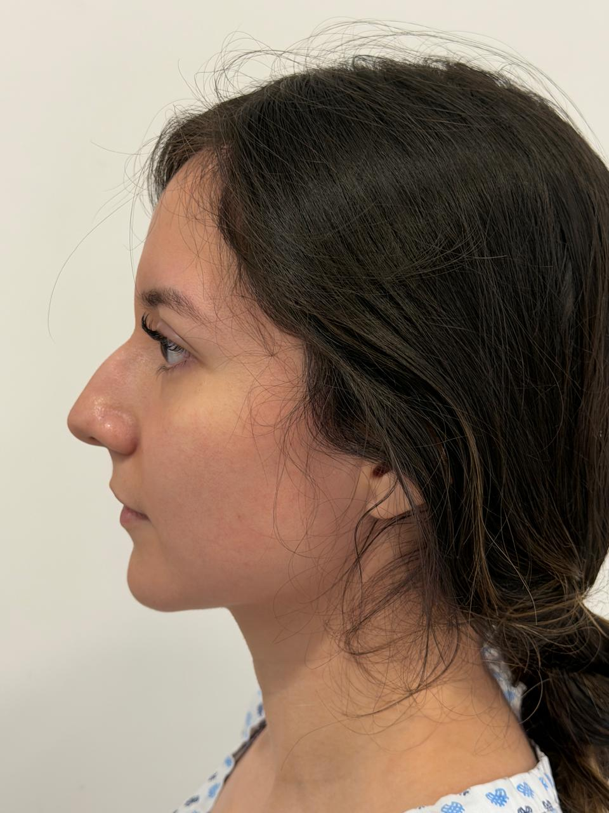

Blefaroplastia en CDMX
Cirugía de párpados superiores e inferiores que elimina bolsas, exceso de piel y signos de cansancio. Devuelve a la mirada frescura, luminosidad y una expresión descansada.
Conocer más →
Procedimientos de cirugía estética facial y corporal con técnica refinada, planeación personalizada y resultados naturales. Atención exclusiva del Dr. Francisco López Torres en Ciudad de México.
Soy el Dr. Francisco López Torres, cirujano plástico certificado por el Consejo Mexicano de Cirugía Plástica, Estética y Reconstructiva (Cert. 2531). Soy egresado de la Universidad Anáhuac México como Médico Cirujano y completé la especialidad en Cirugía Plástica, Reconstructiva y Estética en la Universidad Simón Bolívar de Barranquilla, Colombia.
Para perfeccionar mi práctica en cirugía estética facial realicé un Facial Plastic Surgery Fellowship en Saman Plastic Surgery (Dallas, Texas) y con el Dr. Demtri Arnaoutakis (Tampa, Florida), formación enfocada en rinoplastia, deep plane facelift y rejuvenecimiento facial avanzado.
Cada cirugía estética que realizo en CDMX es el resultado de una valoración meticulosa, una planeación quirúrgica precisa y la aplicación de las técnicas más actuales en cirugía plástica. Trabajo con un objetivo claro: que el resultado se vea natural, armónico y se mantenga en el tiempo.
Cada procedimiento se ejecuta con técnica avanzada, instrumental de alta gama y un protocolo postoperatorio diseñado para acompañarte hasta tu recuperación total.
Cirugía de párpados superiores e inferiores que elimina bolsas, exceso de piel y signos de cansancio. Devuelve a la mirada frescura, luminosidad y una expresión descansada.
Conocer más →
Lifting facial que reposiciona los tejidos profundos del rostro y el cuello, restaura el óvalo facial y entrega un resultado elegante, natural y duradero.
Conocer más →
Modela el contorno corporal eliminando depósitos de grasa localizada que no responden a dieta y ejercicio. Resultados definidos y armónicos con la silueta natural.
Conocer más →
Cirugía de nariz que armoniza la proporción facial, corrige asimetrías y mejora la función respiratoria. Técnica abierta y cerrada según cada caso.
Conocer más →
La cirugía estética no se trata únicamente de técnica quirúrgica: requiere un criterio estético formado, capacidad para escuchar profundamente al paciente y la disciplina de no comprometer la seguridad por un resultado momentáneo.
Como cirujano certificado en CDMX, opero exclusivamente en hospitales con licencia sanitaria vigente, acompañado de anestesiólogos titulados y un equipo quirúrgico capacitado. Cada cirugía está respaldada por estudios preoperatorios rigurosos y un plan postoperatorio detallado.
Mi compromiso contigo es claro: nunca te propondré un procedimiento que no necesites, siempre te explicaré con honestidad las opciones y los límites de cada técnica, y te acompañaré durante toda tu recuperación.
Cada paciente atraviesa el mismo proceso ordenado, claro y supervisado. Sin sorpresas, sin pasos saltados, con la información necesaria en cada etapa.
Consulta inicial donde evaluamos motivación, anatomía, historia médica y expectativas. Definimos juntos si el procedimiento es adecuado para ti.
Estudios preoperatorios, simulación cuando es aplicable, selección de técnica y materiales, y entrega del presupuesto detallado.
Procedimiento en quirófano de alta especialidad, con equipo médico completo y bajo los más estrictos protocolos de seguridad anestésica.
Revisiones programadas, control de evolución, manejo de cuidados y resolución de dudas durante todo el proceso de recuperación.
Instrumental quirúrgico de precisión que permite incisiones mínimas, menor inflamación y cicatrices más discretas en cada procedimiento.
Sistemas de asistencia quirúrgica modernos como liposucción asistida por ultrasonido (VASER) y técnicas ultrasónicas en rinoplastia.
En procedimientos seleccionados, herramientas de planeación visual que permiten anticipar el rango de resultados esperables.
Estudios preoperatorios completos, anestesiólogo titulado, monitoreo continuo y hospitales con licencia sanitaria vigente.
Cada transformación refleja un trabajo meticuloso, planificado al detalle y ejecutado con la técnica adecuada para cada caso. Desliza el divisor para comparar.
 ANTES
DESPUÉS
ANTES
DESPUÉS



Todas mis cirugías se realizan en hospitales certificados de Ciudad de México, con quirófanos equipados, anestesiólogos titulados y los más altos estándares de seguridad médica.


Como cirujano estético en CDMX realizo procedimientos faciales como blefaroplastia, facelift y rinoplastia, así como procedimientos corporales como liposucción. Cada cirugía se planifica de forma personalizada según la anatomía y los objetivos del paciente.
Verifica que el cirujano esté certificado en cirugía plástica, opere en hospitales certificados, muestre resultados reales de pacientes, ofrezca una consulta clara y transparente, y te brinde información detallada sobre el procedimiento, riesgos y recuperación.
Depende del procedimiento. Cirugías como blefaroplastia tienen recuperaciones de 7 a 14 días para reincorporación social. Procedimientos corporales como liposucción requieren entre 2 y 4 semanas. En la valoración se detalla el tiempo de recuperación específico.
Sí, en muchos casos es posible combinar procedimientos en una sola intervención, siempre que el estudio preoperatorio confirme que es seguro hacerlo. Se evalúa caso por caso priorizando siempre la seguridad del paciente.
Sí. Recibimos pacientes de toda la República Mexicana y del extranjero. Coordinamos consulta virtual previa, hospedaje durante la recuperación y seguimiento postoperatorio remoto si lo requieres.

Conversemos sobre tus objetivos estéticos, resolvamos tus dudas y diseñemos juntos el plan quirúrgico adecuado para ti. La decisión correcta empieza con la información correcta.
Escribir por WhatsApp